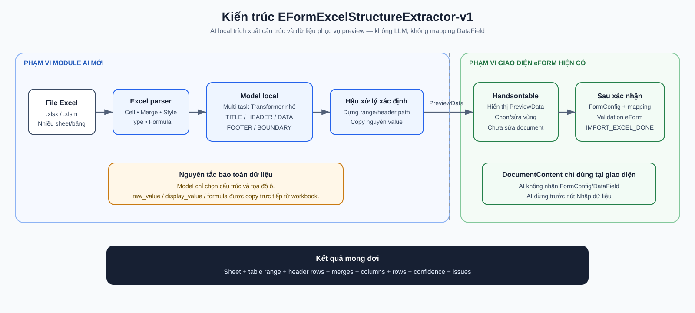
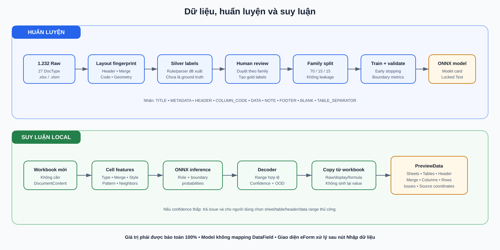

1. Tóm tắt điều hành
Sản phẩm cần xây là EFormExcelStructureExtractor-v1: AI nhận diện cấu trúc spreadsheet, không phải chatbot và không phải hệ thống ánh xạ nghiệp vụ.
Trong phạm vi AI
- Phát hiện sheet và nhiều vùng bảng.
- Nhận diện title, metadata, header, code row, data, note, footer.
- Dựng header rows, header path và merge.
- Trả PreviewData, confidence và issues.
Ngoài phạm vi AI
- DocumentContent, FormConfig và DataField.
- Mapping dữ liệu vào biểu.
- Required/readonly/sum/business rules.
- ValueData, SourceData và ghi document.
2. Hệ thống cũ hoạt động như thế nào?
Luồng document import hiện tại nhận cấu hình biểu trước khi tách dữ liệu. Số dòng header thường được suy ra từ FormConfig.extra.headerSetting.length; các dòng còn lại được ghép vào danh sách field nhìn thấy theo vị trí. ID field được lấy từ phần trước !! trong khóa header.
Điểm tốt
Nhanh, đơn giản và rất ổn định khi Excel đúng tuyệt đối template. Logic mapping, validation, readonly và ghi document đã có sẵn nên không cần thay.
Giới hạn
Khi file thêm title, đổi số dòng header, có nhiều table/sheet, footer dài hoặc merge khác nhẹ, việc lấy vùng bảng dựa trên FormConfig có thể sai. Lỗi extract và lỗi mapping bị trộn trong cùng một bước nên khó kiểm tra.
3. Kiến trúc hướng mới

Contract đầu ra
{
"schema_version": "1.0",
"file_name": "bao-cao.xlsx",
"sheets": [{
"sheet_name": "9a",
"tables": [{
"table_id": "9a-table-1",
"range": "A3:I7",
"header_start_row": 3,
"header_end_row": 6,
"data_start_row": 7,
"data_end_row": 7,
"header_rows": [],
"merged_cells": [],
"columns": [],
"rows": [[2616, 2616, 14912000]],
"confidence": 0.98,
"issues": []
}]
}]
}
source_column; chỉ giao diện eForm mới đổi sang object có DataField ID sau xác nhận.4. Mô hình AI được xây dựng
Một checkpoint multi-task nhỏ, chạy local/CPU và có thể export ONNX.
| Output head | Nhiệm vụ | Cách dùng |
|---|---|---|
| Row-role | Phân loại TITLE, METADATA, HEADER, COLUMN_CODE, DATA, NOTE, FOOTER, BLANK | Xác định thành phần sheet |
| Boundary | Dự đoán table/header/data start/end | Cắt table range |
| Cell-role | Phân biệt header cell, label cell, value cell và note | Xử lý sheet khó/nhiều bảng |
Actual report value không được dùng để đoán ý nghĩa. Model có thể dùng loại dữ liệu, mật độ numeric và pattern nhưng hậu xử lý luôn copy lại cell gốc.
5. Dữ liệu và cách gắn nhãn
Dữ liệu hiện có rất lệch: 09a có 722 file, 05b có 139 file, trong khi nhiều mã chỉ có 1-6 file. Nhiều file khác tên đơn vị nhưng dùng chung một template. Vì vậy số workbook không tương đương số layout độc lập.
Nhãn cần thu thập
- Table start/end và column start/end.
- Header start/end, code row, data start/end.
- Row role và cell role.
- Merge anchor/span.
- Expected PreviewData cho kiểm thử end-to-end.
6. Huấn luyện và suy luận

Huấn luyện
- Fit vocabulary/normalizer chỉ trên Train.
- Dùng weighted cross-entropy và balanced sampler để lớp DATA/BLANK không lấn át lớp hiếm.
- Tăng trọng số lỗi boundary vì sai một dòng có thể làm mất toàn bộ bảng.
- Early stop theo whole-table exact match trên Validation.
- Chọn confidence/OOD threshold trên Validation.
- Khóa checkpoint rồi mới chạy Test.
- Export ONNX cùng feature config, label map, dataset hash và model card.
Suy luận
Parser đọc workbook → tạo features → ONNX model dự đoán → constrained decoder tạo range hợp lệ → copy cell gốc → validate JSON → trả PreviewData. Nếu confidence thấp, hệ thống trả issue và yêu cầu người dùng chọn vùng thủ công.
7. Lợi ích và lý do cần AI
| Tiêu chí | Hệ thống cũ | Hướng AI mới | Lợi ích |
|---|---|---|---|
| Phụ thuộc biểu | Cần FormConfig khi cắt dữ liệu | Extract không cần DocumentContent | Dùng lại cho mọi biểu cùng quy ước |
| Header biến thể | Dựa vào số dòng header cấu hình | Model dự đoán boundary | Chịu được thêm/bớt title/metadata |
| Nhiều bảng | Khó tách tự động | Trả danh sách table region | Người dùng chọn đúng bảng |
| Footer/ghi chú | Có thể bị tính vào data | Phân loại NOTE/FOOTER | Row count đúng hơn |
| Preview nguồn | Gắn sớm với cấu hình biểu | Hiển thị raw header/value trước | Dễ đối chiếu và debug |
| Độ an toàn số liệu | Copy trực tiếp | Vẫn copy trực tiếp | AI không làm thay đổi số |
| Mở rộng biểu mới | Có thể cấu hình lại cách cắt | Học cấu trúc chung | Không phụ thuộc DataField mới |
| Bảo mật | Nội bộ | Model local, không gọi Internet | Phù hợp dữ liệu hành chính |
8. Có áp dụng cho tất cả loại biểu không?
Cam kết đúng phải là “áp dụng cho mọi biểu nằm trong phạm vi cấu trúc đã định nghĩa và có cơ chế từ chối/fallback cho file ngoài phạm vi”, không phải “đọc đúng mọi file Excel trên thế giới”.
9. Kế hoạch 8 tuần
Chốt PreviewData, định dạng hỗ trợ, golden workbooks và lỗi baseline.
Tạo manifest/fingerprint/family; phân tích mất cân bằng và chọn mẫu đại diện.
Rule tạo silver; human review table/header/data/footer theo family để tạo gold.
Chia family 70/15/15, khóa Test, xây rule-only và classifier baseline.
Huấn luyện multi-task Transformer nhỏ, early stopping, chọn threshold và export ONNX.
Dựng table/header paths, copy values, schema validation và fallback.
Test/challenge, metric phân tầng, latency/memory, failure analysis.
API extract, Handsontable preview, shadow mode, correction loop và release gate.
10. Kết quả mong đợi và nghiệm thu
Các mức dưới đây là mục tiêu phải đo, không phải số liệu đã đạt.
| Chỉ số | Mục tiêu v1 | Lý do |
|---|---|---|
| Cell value preservation | 100% | Giá trị được copy, không dự đoán |
| Header text preservation | 100% khi vùng đúng | Không được sửa nội dung nguồn |
| Table detection F1 | ≥ 0,98 | Đúng vùng bảng |
| Header/data boundary exact | ≥ 0,95 | Không mất hoặc thừa dòng |
| Column count exact | ≥ 0,98 | Không mất cột |
| Whole-table exact match | ≥ 0,95 | Đánh giá end-to-end |
- ✓ Chạy hoàn toàn local.
- ✓ Không cần DocumentContent để extract.
- ✓ Không sửa document trước xác nhận.
- ✓ Có source coordinate cho mọi output cell.
- ✓ Có manual fallback và OOD detection.
- ✓ Test độc lập theo layout family.
- ✓ Giao diện cũ tiếp tục mapping/validation/import.